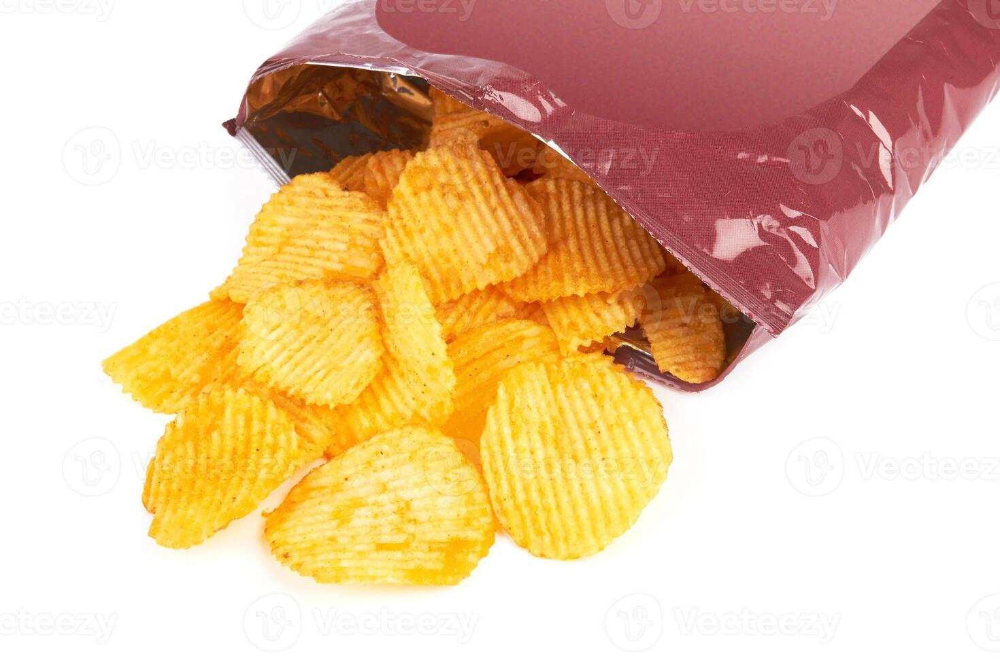

About Potato Chips Classic
Potato Chips Classic is a premium potato snack made from carefully selected Australian organic potatoes, thinly sliced and cooked to achieve a light, crispy, and crunchy texture.
Seasoned with a touch of salt, the chips deliver a simple and authentic potato flavor while maintaining consistent quality and freshness in every pack.

Product Claims
- Made from Australian organic potatoes
- Lightly salted
- Light and crispy texture
- No artificial flavors
- Authentic potato flavor
Recommended Usage
Ready-to-eat snack.Best enjoyed immediately after opening.
Shelf Life
12 months
Storage Conditions
Store in a cool, dry place away from direct sunlight and excessive humidity. Do not consume if the packaging is damaged or opened before purchase.